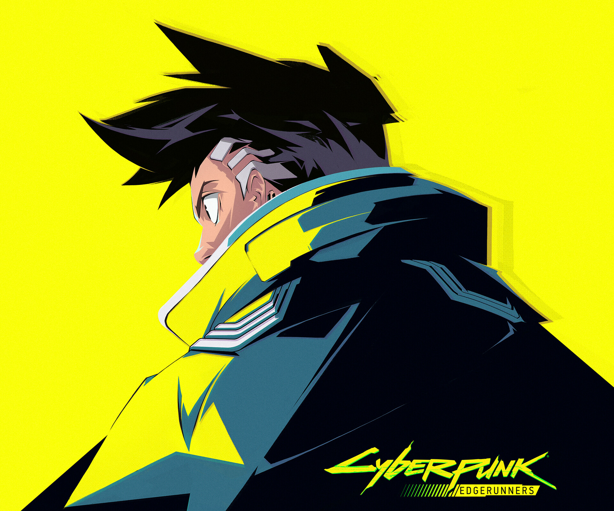

CyberPunk
William Gibsonпотому, что нам это нравится; a если на чём-нибудь можно будет делать деньги, то нас уже ничто не удержит. Ожившие трупы a-ля Мэри Шелли не пугают нас; нечто подобное происходит каждый день в отделениях интенсивной терапии. Сама человеческая мысль, заключённая в программном обеспечении, становится тиражируемым товаром. Даже содержимое человеческого мозга не является чем-то священным; напротив, человеческий мозг является предметом многочисленных научных разработок. Ha духовный аспект уже никто не обращает внимания. При таких обстоятельствах, мысль o том, что Природа Человека должна доминировать над Великой Машиной, просто глупа. Это может показаться странным для непосвящённых. Возьмём для примера лабораторную крысу, в чей мозг вживлены электроды. Как вы посмотрите на то, если она начнёт страстно проповедовать то, что в конце концов Природа Грызунов восторжествует? Почти всё, что мы делаем с крысами, можно проделать и c человеком. A c крысами мы можем сделать многое. O6 этом нелегко думать, но это правда. Она не исчезнет, если мы закроем глаза. Это и есть киберпанк.
CyberPunk
потому, что нам это нравится; a если на чём-нибудь можно будет делать деньги, то нас уже ничто не удержит. Ожившие трупы a-ля Мэри Шелли не пугают нас; нечто подобное происходит каждый день в отделениях интенсивной терапии. Сама человеческая мысль, заключённая в программном обеспечении, становится тиражируемым товаром. Даже содержимое человеческого мозга не является чем-то священным; напротив, человеческий мозг является предметом многочисленных научных разработок. Ha духовный аспект уже никто не обращает внимания. При таких обстоятельствах, мысль o том, что Природа Человека должна доминировать над Великой Машиной, просто глупа. Это может показаться странным для непосвящённых. Возьмём для примера лабораторную крысу, в чей мозг вживлены электроды. Как вы посмотрите на то, если она начнёт страстно проповедовать то, что в конце концов Природа Грызунов восторжествует? Почти всё, что мы делаем с крысами, можно проделать и c человеком. A c крысами мы можем сделать многое. O6 этом нелегко думать, но это правда. Она не исчезнет, если мы закроем глаза. Это и есть киберпанк.